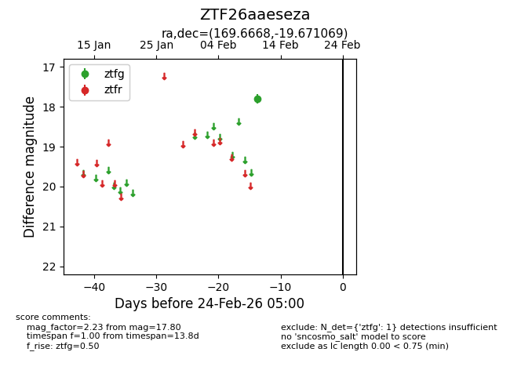
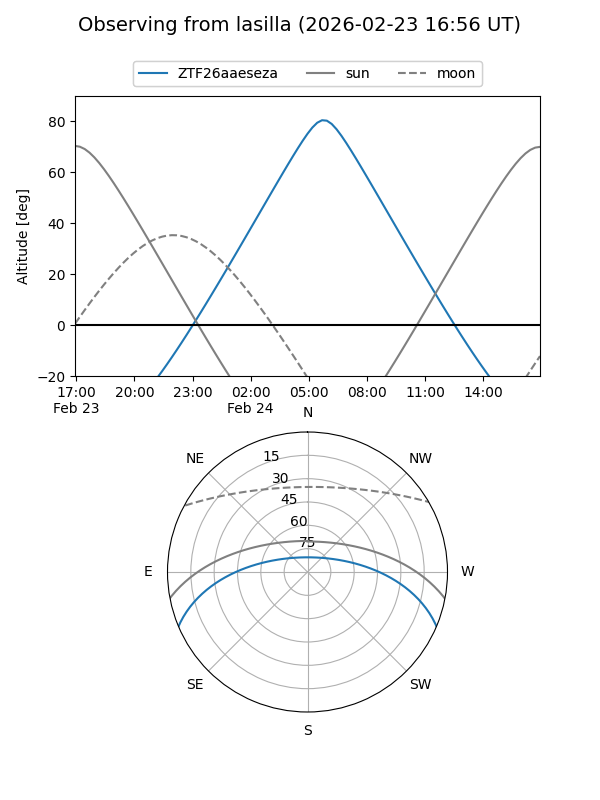
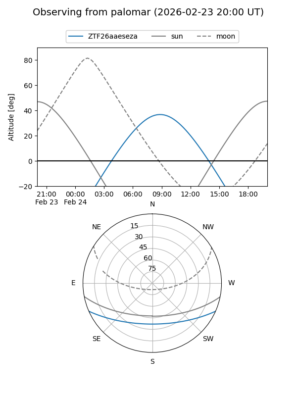

ZTF26aaeseza
Target ZTF26aaeseza at 2026-02-24 09:08
Aliases and brokers:
FINK: link
Lasair: link
ALeRCE: link
alt names
ZTF26aaeseza (ztf,fink_ztf)
Coordinates:
equatorial (ra, dec) = 169.6668,-19.67107
equatorial (HMS+DMS) = 11:18:40.04,-19:40:15.85
galactic (l, b) = (274.8230,+38.08498)
Flags:
Photometry:
last ztfg=17.80
1 ztfg detections
Lightcurve

Visibility


Additional plots